Write
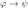
for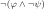
. The axioms are all formulas of the six shapes- ;
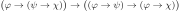
;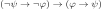
;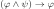
;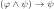
;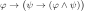
.
A derivation of  from a set
from a set
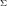
is a finite sequence of formulas ending in, each of which is an axiom, a member
of , or follows from two earlier ones by modus ponens – from
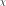
and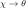
, infer . One writes
. One writes
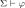
.If then
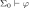
for some finite ; and
; and 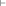
is monotone: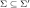
and imply
imply
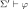
.A derivation is a finite sequence, so it mentions finitely many members of ; those form the required
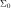
, and the same sequence is a derivation from it. Monotonicity holds because every derivation from is literally a derivation from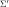
.
If then  : every
truth assignment satisfying all of satisfies .
: every
truth assignment satisfying all of satisfies .
Unfolding the abbreviation,
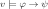
holds exactly when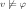
or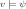
; this is the only semantic fact used below.Each axiom is satisfied by every assignment. Scheme 1: if
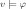
then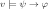
, so the implication holds in either case. Scheme 2: assume satisfies
satisfies
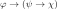
, and; then
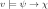
and , hence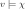
. Scheme 3: assume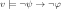
and ; if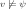
then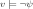
, so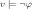
, contradicting ; hence . Schemes 4 to 6 are the clause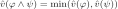
read three times.
Now let satisfy and induct along a derivation
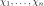
. If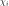
is an axiom it is satisfied by the previous paragraph; if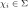
, by hypothesis; and if follows by modus ponens from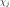
and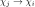
with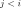
, then satisfies both by
induction, hence satisfies .
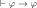
for every formula.
Take the instance of scheme 2 with
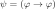
and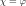
: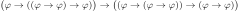
. Its antecedent is an instance of scheme 1, so modus ponens gives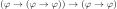
; the antecedent of that is again an instance of scheme 1, and a second modus ponens yields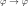
.
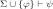
if and only if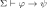
.For the direction that is not immediate, induct along a derivation
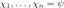
from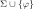
, showing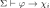
. If is an axiom or lies in , then scheme 1 gives , and modus ponens yields the claim. If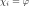
, this is the lemma. If comes by modus ponens from and , then by induction derives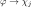
and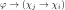
; scheme 2 and two applications of modus ponens give .
The converse is one application of modus ponens: from
 and , infer
and , infer  .
.
The deduction theorem is what makes a Hilbert system usable at all – without it, proving an implication means guessing an axiom instance. Note that it is a theorem about the system, proved by induction on derivations in the ambient mathematics, and not a rule of the system: that separation between the object language and the language reasoning about it is the whole methodological point of proof theory.